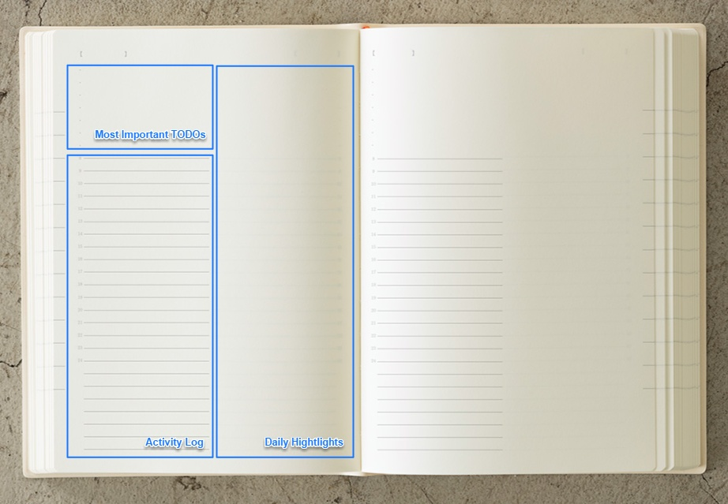
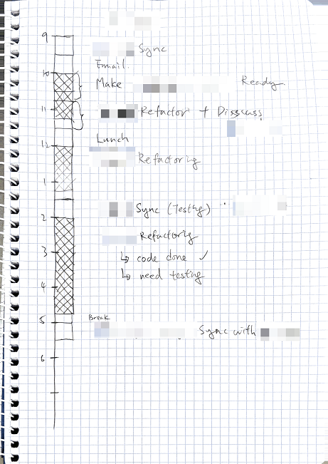
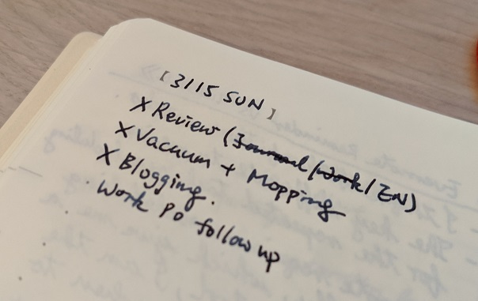

In the previous post 2019 Year-End Reflection, I wrote:
I kept a daily journal. When people ask me why keeping a journal, my 2019 answer was to track TODO and activity log, then review at the end of the day. My 2020 answer is to make every day meaningful and counted. I will share the nuances in another post later.
In this post, I will share how I got started and the 3 components of my daily journal.
- Activity Log
- Most Important TODOs
- Daily Highlights

Activity Log
The activity log is what brought me to journaling after reading Cal Newport’s Deep Work:
For an individual focused on deep work, it’s easy to identify the relevant lead measure: time spent in a state of deep work dedicated toward your wildly important goal. … When I shifted to tracking deep work hours, suddenly these measures became relevant to my day-to-day: Every hour extra of deep work was immediately reflected in my tally.
How much hours do I spend on deep and shallow work respectively? I don’t really know. So I started tracking my activities and annotating their deepnesses.
This was my very first daily journal :-)

I found the activity log does not only track the deep and shallow hours, but also proved the Planning Fallacy to me:
The planning fallacy, …, is a phenomenon in which predictions about how much time will be needed to complete a future task display an optimism bias and underestimate the time needed.
I have estimated a task that takes one day but it took me 3 days to finish. Activity log gave me a sense of how my time is spent and how much time do I need for a specific kind of task. Later at night, I can also use this activity log to review what I have done in a day.
Most Important TODOs
I have two TODO lists for each day. The everything list and the most important list. As the names imply, the everything list holds all TODOs scheduled for the day and the most important list holds the most important TODOs of the day.

So, why do I need two lists?
Without the important list, the everything list, which consists of many important, unimportant, urgent and nonurgent TODOs, could be overwhelming and confusing. The volume of TODOs usually exceed one’s capacity. As the Completion Bias states:
It feels good to chip away at the smaller tasks nibbling at your brain, but the time you spend doing so is time you’re not spending on bigger, more important projects.
That means I tend to check off many small and easy TODOs but not getting the important and hard ones done. To fix it, each morning, I go through the everything list from my Productivity System and curate TODOs to form the most important list. Then, focus on the most important list before going back to the everything list.
That does not mean the everything list is useless. These two lists are complementary. Without the everything list, brainstorming the most important list out of nothing is an arduous task. Those important TODOs could be too ad hoc and hence not really important.
The most important list also has a variation called the “1-3-5 Rule”.
Daily Highlight
Daily highlight is my 2020 answer to daily journal.
The activity log and the most important TODOs list mentioned above had worked very well for me, until I was reviewing the journal in the last year end. I found my journal is boring and full of little things that are not interesting to me anymore. Those “fix bug XXX”, “weekly YYY meeting” or “implement feature ZZZ” got the things done but I no longer care about them.
I asked myself, how can I make every day I lived meaningful and counted, so that some days in the future, I can reminisce?
Then, I added the daily highlight section to the daily journal. The daily highlights could be anything, without any format but have to be worth reading again. For examples,
- an inspiring excerpt I read,
- an unforgettable mistake I made,
- a bloody lesson I learnt,
- a nice chat with someone,
- a work I am proud of.
Finally, thanks for reading til now to this very last sentence :-)